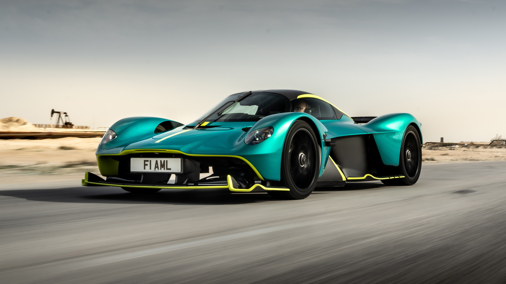

Aston Martin
Aston Martin es la encarnación del estilo británico, la artesanía exquisita y el rendimiento sofisticado, que ha cautivado a entusiastas y coleccionistas por más de un siglo. Fundada en 1913 por Lionel Martin y Robert Bamford, la marca se forjó en las colinas de Aston Clinton (de donde tomó su nombre) con un espíritu que combinaba elegancia distintiva y desempeño deportivo.Lo que define a Aston Martin es su dualidad única: por un lado, es sinónimo de lujo refinado y diseño atemporal, visible en modelos como el DB5 (eternamente ligado a James Bond) o el Vanquish, con líneas esculpidas a mano que parecen obras de arte rodantes. Por otro, es una marca de competencia, con un legado en carreras que incluye victorias en Le Mans y la Fórmula 1 (como equipo oficial desde 2021). Aston Martin es artesanía hecha automóvil: cada interior en cuero Bridge of Weir o detalles como las llaves de cristal (en el Valkyrie) reflejan su herencia de taller de lujo. Pero también es tecnología punta: el Valhalla, con su motor híbrido V8 y aerodinámica de F1, o el DB12, el "Super Tourer" más potente de su historia, demuestran que la innovación es clave.
Más allá de los autos, Aston Martin es cultura y pasión: es la marca que eligió 007 para perseguir villanos, la que inspiró a generaciones con su rugido inconfundible y la que, bajo el liderazgo de Lawrence Stroll, se reinventa sin perder su esencia. Con sedes en Gaydon y Newport Pagnell, donde se construyen joyas como el DBS 770 Ultimate, Aston Martin sigue siendo el sueño británico sobre ruedas.

"Aston Martin Vantage"

"Aston Martin Valkyrie"
"Aston Martin Valkyrie"
"Aston Martin AMR22"